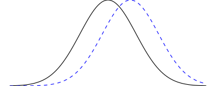

10|HYPOTHESIS TESTING
part 2

Overview
Inferential errors
Effect size
- Significant effects are not always substantial
- As sample size increases, standard error of the mean decreases
- Even a tiny treatment effect might come out as “statistically significant”
- Need to consider effect size
- How big is the treatment effect?
- Quantifies the absolute magnitude of a treatment effect, independent of sample size


Effect size
- Quantifying effect size
- One measure: Cohen’s \(d\)
- Quantifies the absolute magnitude of a treatment effect, independent of sample size
- Measures effect size in terms of standard deviation
- \(d = 1.00\): treatment changed \(\mu\) by 1 SD
\[\text{Cohen's } d = \dfrac{\text{mean difference}}{\text{standard deviation}} = \dfrac{\mu_{treatment} - \mu_{no \ treatment}}{\sigma}\]
For \(z\)-tests:
\[\text{Estimated Cohen's }d = \dfrac{\text{mean difference}}{\text{standard deviation}} = \dfrac{M_{treatment} - \mu_{no \ treatment}}{\sigma}\]
Interpreting Cohen’s \(d\)
| d | Interpretation |
|---|---|
| 0.2 | Small |
| 0.5 | Medium |
| 0.8 | Large |
Effect size & sample size
- SAT scores: \(\mu = 500; \sigma = 100\)
- Administer treatment (banana); \(M = 501\)
- Significant? \((\alpha = .05\) two-tailed; critical values \(z = \pm 1.96)\)
- Substantial? (effect size)
With 50 participants…
\[z = \dfrac{501 - 500}{100 / \sqrt{50}} = 0.06\\ d = \dfrac{501 - 500}{100} = 0.01\]
With 50,000 participants…
\[z = \dfrac{501 - 500}{100 / \sqrt{50000}} = 2.22\\ d = \dfrac{501 - 500}{100} = 0.01\]
Statistical power
- Power: Probability of correctly rejecting a false null hypothesis
- Depends on size of treatment effect, sample size, alpha, directional / nondirectional hypotheses
- Power = 1 – \(\beta\)
Power interactive
d3 = require("https://d3js.org/d3.v5.min.js")
jStat = require("https://cdn.jsdelivr.net/npm/jstat@latest/dist/jstat.min.js")
width = 1000
height = 400
xlim = [-5, 5]
h0 = {
var values = jStat(xlim[0], [xlim[1]], 210)[0],
arr = [];
for (var i in values) {
arr.push(
{
value: values[i],
density: jStat.normal.pdf(values[i], 0, sd)
}
)
}
return arr;
}
ha = {
var arr = [];
for (var i in h0) {
arr.push({
value: h0[i].value + mean_diff,
density: h0[i].density
})
}
return arr;
}
alpha_x = {
if(tails) {
return jStat.normal.inv(1 - alpha/2, 0, sd)
} else {
return jStat.normal.inv(1 - alpha, 0, sd)
}
}
alpha_x2 = {
if(tails) {
return -alpha_x
} else {
return -100
}
}
beta = jStat.normal.cdf(alpha_x, mean_diff, sd) - jStat.normal.cdf(alpha_x2, mean_diff, sd)
power = 1 - betaviewof mean_diff = Inputs.range([-3, 3], {value: 1, step: 0.1, label: "Mean difference"})
viewof n = Inputs.range([1, 100], {value: 1, step: 1, label: "n"})
sd = 1/Math.sqrt(n)
viewof alpha = Inputs.range([0.01, 0.10], {value: 0.05, step: 0.001, label: "Alpha"})
viewof tails = Inputs.toggle({label: "Two-tailed", value: true})
viewof show_alt = Inputs.toggle({label: "Show H1", value: true})chart = {
const svg = d3.select(DOM.svg(width, height));
svg.append("g")
.call(xAxis)
.attr("transform", `translate(0,${y(0)})`)
.attr("class", "axis")
.style("font-size", "0.5em");
const null_dist = svg.append("g").attr("id", "null-dist")
null_dist.append("path").attr("id", "critical-region-fill")
.datum(h0)
.attr("fill", "red")
.attr("stroke", "none")
.attr("d", line)
.attr('clip-path', "url(#clip-area)")
null_dist.append("path").attr("id", "h0-curve")
.datum(h0)
.attr("fill", "none")
.attr("stroke", "black")
.attr("stroke-width", 2)
.attr("stroke-linejoin", "round")
.attr("stroke-linecap", "round")
.attr("d", line)
.attr("class", "invertable");
null_dist.append("text").attr("id", "h0-text")
.attr("transform", `translate(${x(0)} ,${y(0.1)})`)
.attr("class", "invertable")
.style("text-anchor", "middle")
.style('font-size', '1em')
.text('')
.append('tspan')
.html('H')
.append('tspan')
.html('0').attr('baseline-shift', 'sub').style('font-size', '0.5em');
svg.append("clipPath")
.attr("id", "clip-area")
.append("polygon")
.attr("points", [[0,0], [0,height], [x(alpha_x2),height],[x(alpha_x2),0],
[x(alpha_x),0], [x(alpha_x),height], [width,height],[width,0]]);
svg.append("clipPath").attr("id", "clip-area-interior")
.append("polygon")
.attr("points", [[x(alpha_x2),0],[x(alpha_x2),height],
[x(alpha_x),height], [x(alpha_x),0]]);
<!-- alternative distribution -->
{ if(show_alt) {
svg.append("path")
.datum(ha)
.attr("fill", "none")
.attr("stroke", "steelblue")
.attr("stroke-width", 2)
.attr("stroke-linejoin", "round")
.attr("stroke-linecap", "round")
.attr("stroke-dasharray", "5, 5")
.attr("d", line);
svg.append("text")
.attr("transform", `translate(${x(mean_diff)} ,${y(0.1)})`)
.style("text-anchor", "middle")
.style('fill', 'steelblue')
.style('font-size', '1em')
.text('')
.append('tspan')
.html('H')
.append('tspan')
.html('1').attr('baseline-shift', 'sub').style('font-size', '0.5em');
svg.append("path")
.datum(ha)
.attr('clip-path', "url(#clip-area)")
.attr("fill", "steelblue")
.attr("opacity", 0.7)
.attr("stroke", "steelblue")
.attr("stroke-width", 2.5)
.attr("d", line);
svg.append("path")
.datum(ha)
.attr('clip-path', "url(#clip-area-interior)")
.attr("fill", "grey")
.attr("opacity", 0.3)
.attr("d", line);
}}
<!-- label alpha -->
null_dist.append('line')
.attr('x1', x(alpha_x))
.attr('x2', x(alpha_x))
.attr('y1', margin.top + 10)
.attr('y2', height - margin.bottom)
.style('stroke', 'red')
.style('stroke-width', '1.5px')
<!-- label alpha two-tailed -->
null_dist.append('line')
.attr('x1', x(alpha_x2))
.attr('x2', x(alpha_x2))
.attr('y1', margin.top + 10)
.attr('y2', height - margin.bottom)
.style('stroke', 'red')
.style('stroke-width', '1.5px')
svg.append("text")
.attr("transform", `translate(${x(alpha_x)} ,${margin.top})`)
.style("text-anchor", "middle")
.style('font-family', 'sans-serif')
.style('font-size', '0.4em')
.style('fill', 'red')
.text("critical region z " + alpha_x.toLocaleString(undefined, {maximumSignificantDigits: 3, minimumSignificantDigits: 3}));
return svg.node();
}
margin = ({top: 20, right: 0, bottom: 30, left: 0})
line = d3.line()
.x(d => x(d.value))
.y(d => y(d.density))
x = d3.scaleLinear()
.domain([xlim[0], xlim[1]])
.range([margin.left, width - margin.right])
y = d3.scaleLinear()
.domain([0, d3.max([0.6, jStat.normal.pdf(0, 0, sd)])])
.range([height - margin.bottom, margin.top])
xAxis = d3.axisBottom(x).ticks(8)Influences
- Factors that influence power
- Effect size
- Larger effect size; greater power
- Sample size
- Larger sample size; greater power
- Alpha level
- Lowering alpha (making the test more stringent) reduces power
- Directional hypothesis
- Using a one-tailed (directional) test increases power (relative to a two-tailed test)
Using statistical power
- Power should be estimated before starting study
- Using known quantities
- Or, more often, making assumptions about factors that influence power
- Determining whether a research study is likely to be successful
- Specify effect size, \(n\), \(\alpha\); calculate power
- Figuring out how many participants you need
- Specify desired power (e.g. .8), expected effect size, \(\alpha\)
- Calculate required sample size
Power & sample sizes
Simmons, J. P., Nelson, L. D., & Simonsohn, U. (2013, January). Life after p-hacking. In Meeting of the society for personality and social psychology, New Orleans, LA (pp. 17-19). http://dx.doi.org/10.2139/ssrn.2205186
Low power
Running a study with low statistical power is like setting out to look for distant galaxies with a pair of binoculars: even if what you’re looking for is definitely out there, you have essentially no chance of seeing it.
Stuart Ritchie, Science Fictions
Learning checks
- True/False
- Larger differences between the sample and population mean increase effect size
- Increasing the sample size increases the effect size
- An effect that exists is more likely to be detected if \(n\) is large
- An effect that exists is less likely to be detected if \(\sigma\) is large
- A Type I error is like convicting an innocent person in a jury trial
- A Type II error is like convicting a guilty person in a jury trial